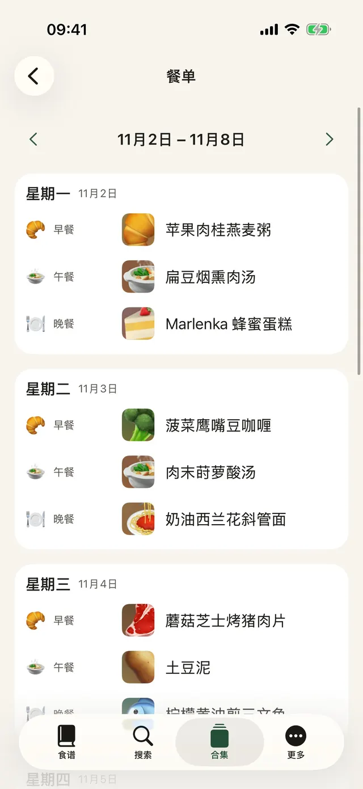
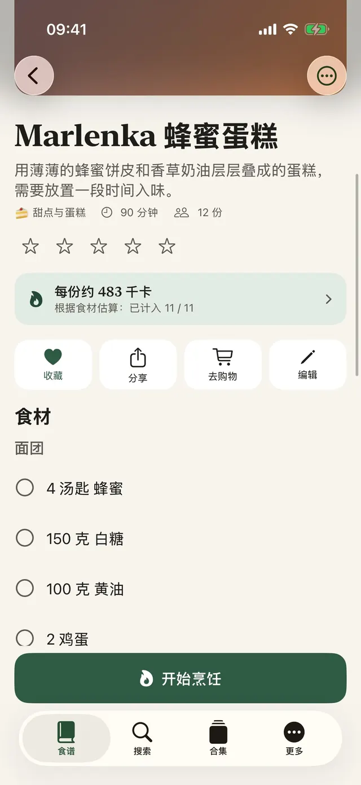
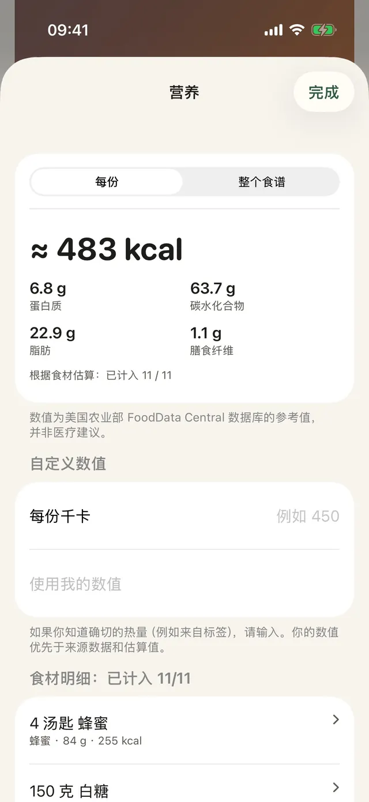
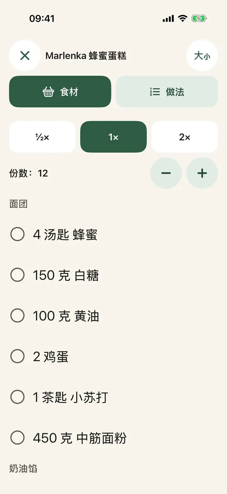
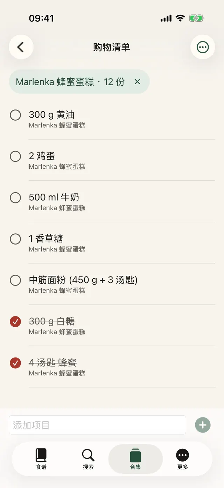
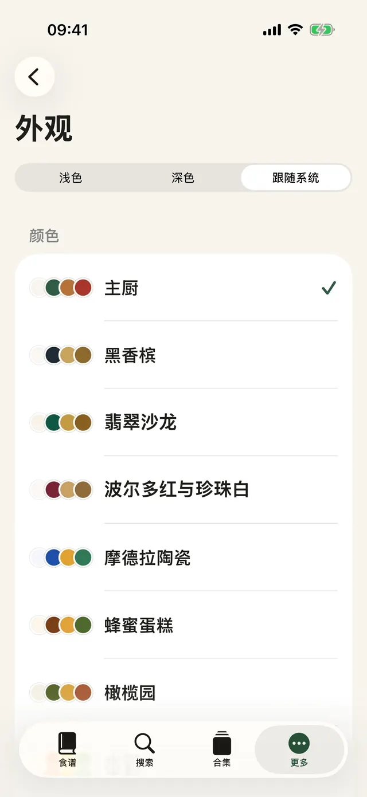
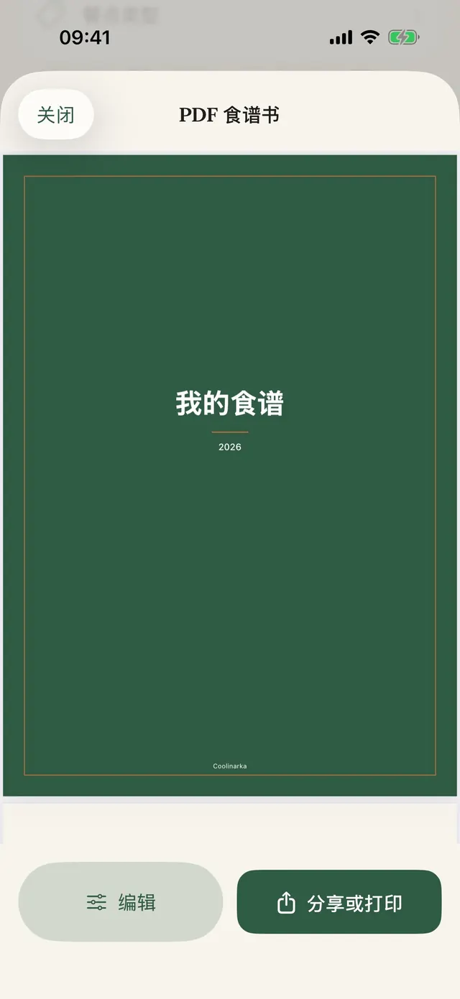
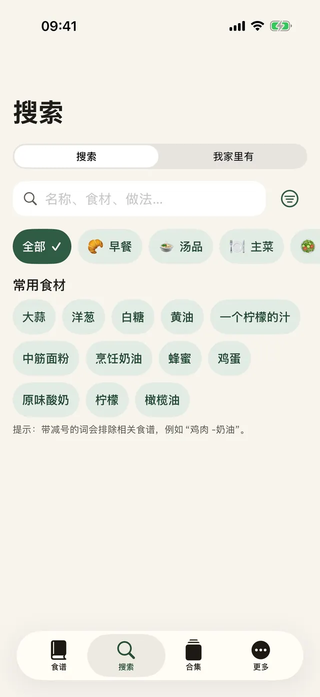
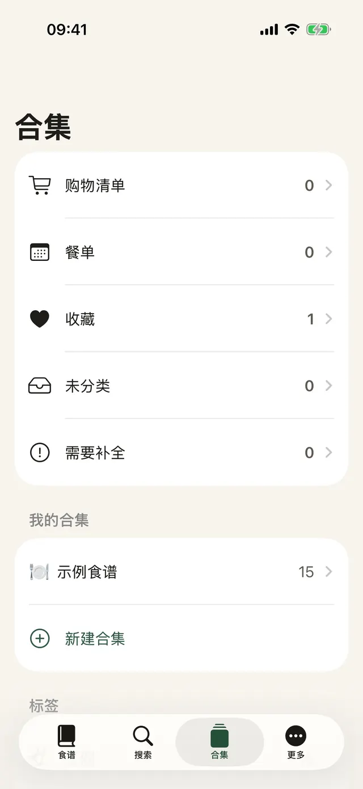

轻点一下就保存
在 Instagram、Facebook 或 Safari 中轻点“分享”，然后选择 Coolinarka。
从 Instagram、Facebook、网页或视频保存食谱。Coolinarka 会把它整理成清晰的食材和步骤，做菜时一步一步带着你来。
适用于 iPhone 和 iPad，免费。Android 版即将登陆 Google Play。 发布时通知我适用于 iPhone、iPad 和 Android，免费。

社交媒体帖子里的食谱就是这个样子。轻点一下，一切井井有条，份数还能随时换算。
😍😍 奶油西兰花斜管面!!! 400 克 斜管面, 1 西兰花, 250 毫升 烹饪奶油, 2 瓣 大蒜, 50 克 帕玛森奶酪, 盐和胡椒 ... 按包装说明煮斜管面，最后4分钟加入西兰花小朵一起煮。 锅中放油，把大蒜稍微炒香，倒入奶油加热。 沥干的面和西兰花与酱汁拌匀，撒上帕玛森奶酪。 🔥🔥 #奶油西兰花斜管面 #food
做法简单，孩子也爱吃的意面。
这是应用内的示例食谱。真实的帖子往往更乱，Coolinarka 也能应付，即使来自截图或视频。
大字体，一屏一步，屏幕不会熄灭。满手面粉也能轻点一下启动计时器。
演示中的计时器会加速运行。
按包装说明煮斜管面，最后4分钟加入西兰花小朵一起煮。
多个食谱的食材会自动合计。切换国家或地区，看看搜索词如何变成商店的语言，即使食谱是另一种语言。
商品要在商店里加入购物车。应用无法访问你在商店的账户。供货情况取决于你的地址。
在台湾买土豆，在日本找汤，在意大利点拿铁。出门在外，一个小小的误会，购物篮里就成了别的东西。Coolinarka 用商店的语言搜索，免得你遇上这种事。猜猜看，你会带回家什么？
九种主题，各有专属图标，还有深色模式和较大字体。选一个，整个页面都会跟着变，就像应用里一样。
都是真实界面，显示的就是你正在阅读的语言。









在 Instagram、Facebook 或 Safari 中轻点“分享”，然后选择 Coolinarka。
视频或屏幕录制都能变成食谱，语音直接在手机上转写。
规划一整周，用收藏填补空位，再把全部内容发送到购物清单。
餐点类型、标签、收藏和你自己的合集。
按名称、食材或做法搜索，不区分变音符号。
主屏幕和锁定屏幕上的“今天做什么”小组件，还有 Siri：“在 Coolinarka 中我该做什么”。
对方可以在 Coolinarka 中打开，连照片一起，但你的评分和备注不会包含在内。
裁剪、旋转和滤镜。
食谱通过 iCloud 在使用同一 Apple 账户的设备之间同步。
备份你的合集，或把它转移到其他应用。
连示例食谱和热量估算也一样。
应用无需账户，没有广告，也没有跟踪。食谱保存在你的设备和你的私人 iCloud 中，开发者无法访问。
食谱、导入、导出、备份、iCloud 和烹饪模式都不收费。Plus 是一次性购买，没有订阅，还可以与家人共享。
首发价 €4.99（至 2026 年 11 月 30 日），2026 年 12 月 1 日起 €14.99。一次性购买。
欧元区价格，其他国家以 App Store 和 Google Play 的当地价格为准。 数值仅供参考，不构成医疗建议。计算在设备上完成。
下载 Coolinarka，今天就保存第一个食谱。
适用于 iPhone 和 iPad，免费。Android 版即将登陆 Google Play。 发布时通知我适用于 iPhone、iPad 和 Android，免费。